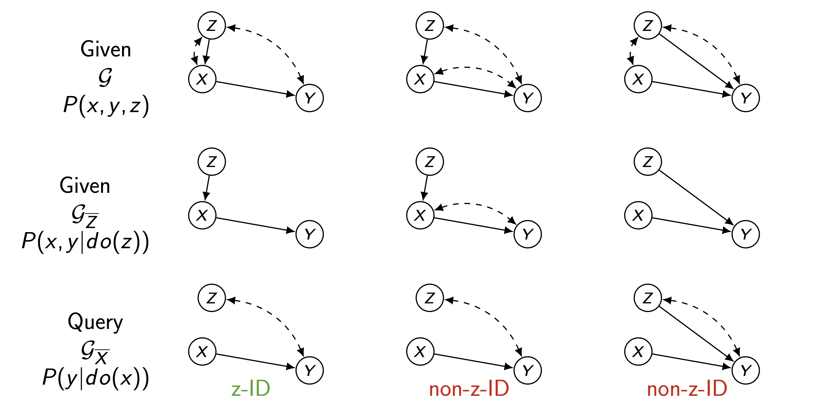
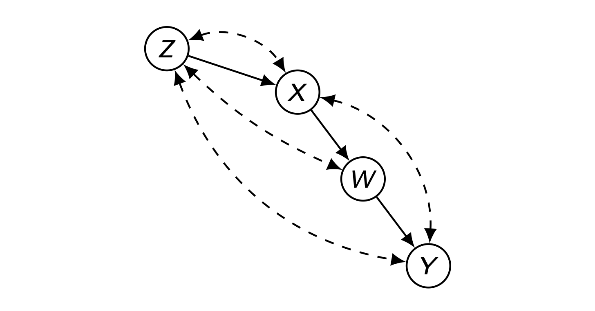
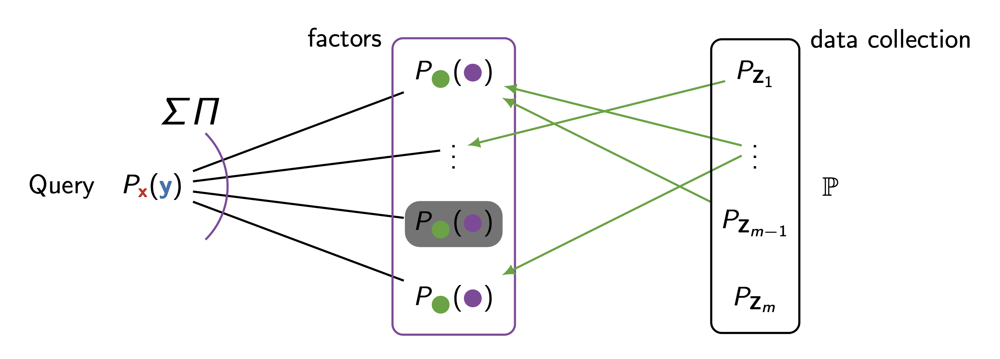

Overview: The Challenge of Experimental Conditions
이전 포스트에서는 Causal Data Science가 다루는 4가지 차원(Dimensions)에 대해 개괄적으로 살펴보았습니다.
이번 포스트에서는 그 첫 번째이자 가장 기초가 되는 문제인 Experimental Conditions와 General Identifiability (g-ID)에 대해 깊이 있게 다룹니다.
우리가 \(do(x)\)에 대한 인과 효과 \(P(y|do(x))\)를 알고 싶을 때, 이상적인 상황은 \(X\)에 대한 무작위 대조군 실험(RCT) 데이터가 있는 것입니다.
하지만 현실에서는 다음과 같은 제약이 따릅니다:
- 윤리적/비용적 문제: \(X\)(예: 흡연, 유해 물질 노출)를 직접 실험할 수 없음.
- 대리 실험(Surrogate Experiments): \(X\) 대신 \(Z\)(예: 식이요법, 보조 약물)에 대한 실험 데이터만 존재함.
- 이질적 데이터의 결합: 여러 개의 서로 다른 실험 결과(\(do(x_1), do(x_2)\))를 결합하여 새로운 개입(\(do(x_1, x_2)\))의 효과를 추정해야 함.
이 문제는 “우리가 가진 다양한 실험 및 관찰 데이터(\(\mathbb{P}\))를 활용하여, 타겟 질의(\(Q\))를 식별할 수 있는가?”라는 General Identifiability 문제로 귀결됩니다.
2. z-ID: Experimental Identifiability
2.1. Motivation: Diet, Cholesterol, and Heart Attack
- 가장 단순한 형태의 대리 실험 문제를 살펴보겠습니다.
- 우리의 목표는 콜레스테롤 수치(\(X\))가 심장마비(\(Y\))에 미치는 인과 효과 \(P(y|do(x))\)를 알아내는 것입니다.

- Query: \(Q = P(y|do(x))\)
- Problem: \(X\)와 \(Y\) 사이에 관측되지 않은 교란 요인(Confounder)이 존재하여(위 그림의 \(X \leftrightarrow Y\) 점선), 관찰 데이터 \(P(x,y,z)\)만으로는 \(Q\)를 식별할 수 없습니다.
- Available Data:
- Observational: \(P(x,y,z)\)
- Experimental (Surrogate): \(P(x,y|do(z))\) — 식이요법(\(Z\))은 실험 가능함.
- 이 경우, \(Z\)에 대한 실험 데이터를 사용하여 \(X\)의 효과를 식별할 수 있을까요? 이를 z-ID 문제라고 합니다.
2.2. Instrumental Variable Formula derived from Experiments
만약 \(Z\)가 \(X\)를 통해서만 \(Y\)에 영향을 미친다면(즉, \(Z \to Y\) 직접 경로가 없고, \(Z\)와 \(Y\) 사이의 교란이 없다면), 우리는 다음 식을 유도할 수 있습니다.
\[ P(y|do(x)) = \frac{P(x,y|do(z))}{P(x|do(z))} = P(y|x, do(z)) \]
Derivation
- 이 식은 Do-Calculus 규칙을 적용하여 단계적으로 유도할 수 있습니다.
- 핵심은 \(do(x)\)라는 가상의 개입을 \(do(z)\)라는 실제 가능한 실험으로 변환하는 것입니다.
\[ P(y|do(x)) \xrightarrow{\text{Step 1}} P(y|do(x), do(z)) \xrightarrow{\text{Step 2}} P(y|x, do(z)) \]
Step 1: 배제 제약 (Exclusion Restriction) 적용
\[P(y|do(x)) = P(y|do(x), do(z))\]
- 논리: 도구변수의 핵심 가정에 따르면 \(Z\)는 오직 \(X\)를 통해서만 \(Y\)에 영향을 줍니다.
- 해석: 이미 \(X\)를 \(do(x)\)로 고정하여 \(Y\)에 대한 \(X\)의 영향력을 통제하고 있다면, \(Z\)를 추가로 \(do(z)\)로 고정하더라도 \(Y\)의 분포에는 아무런 변화가 없습니다. (\(Z \to Y\) 직접 경로 부재)
Step 2: 관측과 개입의 교환 (Rule 2)
\[P(y|do(x), do(z)) = P(y|x, do(z))\]
- 논리: \(do(z)\)가 수행된 실험적 환경에서는 \(Z\)가 무작위로 할당되므로, \(Z\)로 인해 \(X\)와 \(Y\) 사이의 교란(confounding) 경로가 차단됩니다.
- 해석: 교란 요인이 없는 환경(\(do(z)\)) 하에서는, \(X\)를 강제로 고정(\(do(x)\))했을 때의 결과나, 자연스럽게 \(X=x\)가 된 것을 관측했을 때의 결과가 동일합니다. 즉, \(do(x)\)를 조건부 확률 \(x\)로 바꿀 수 있습니다.
Step 3: 조건부 확률 정의 (Bayes’ Rule)
- 최종적으로 조건부 확률의 정의에 따라 우변을 다시 씁니다.
\[P(y|x, do(z)) = \frac{P(x,y|do(z))}{P(x|do(z))}\]
- 이로써 우리가 실험 데이터(\(do(z)\))를 통해 \(X\)가 \(Y\)에 미치는 인과적 효과(\(do(x)\))를 식별(Identify)할 수 있음이 증명됩니다.
2.3. Subtleties of z-ID
- 모든 경우에 대리 실험이 유효한 것은 아닙니다. 그래프 구조에 따라 식별 가능 여부가 달라집니다.

- 위 그림에서 z-ID가 가능한 경우와 그렇지 않은 경우(non-z-ID)를 구분하는 것은, \(Z\)에 대한 개입이 \(X \to Y\) 관계를 교란하는 뒷문 경로(Back-door path)를 차단하거나, \(X\)의 변동을 충분히 설명할 수 있는지와 관련이 있습니다.
3. Advanced Derivation: Combining Causal Mechanisms (z-ID)
- 복잡한 인과 그래프에서 \(P(\mathbf{V})\)(관측 데이터)만으로는 식별 불가능한 효과를, \(P(\mathbf{V}|do(z))\)(실험 데이터)를 통해 어떻게 계산해 낼 수 있는지 단계별로 유도합니다.

1. Problem Definition & Goal
- Target: \(P(y|do(x))\)
- Challenge: 그래프에 존재하는 많은 교란 경로(Bi-directed arcs) 때문에, 관측 데이터 \(P(\mathbf{V})\)만으로는 이 효과를 식별할 수 없습니다 (Non-identifiable from \(P(\mathbf{V})\)).
- Solution: \(Z\)에 대한 실험 데이터, 즉 \(P(\mathbf{V}|do(z))\)가 가용하다면(Available), 이를 활용해 타겟 효과를 계산할 수 있습니다.
2. Derivation Step 1: Decomposition (C-Component)
- 우선 \(P(y|do(x))\)를 중간 매개변수 \(W\)를 이용하여 두 개의 부분 문제(\(Q[Y]\)와 \(Q[W]\))로 분해합니다.
\[ \begin{aligned} P(y|do(x)) &= \sum_{w} P(y|do(x), w) P(w|do(x)) \quad \text{(Law of Total Probability)} \\ &= \sum_{w} P(y|do(x), do(w)) P(w|do(x)) \quad \text{(Rule 2: Action/Observation Exchange of W)} \\ &= \sum_{w} \underbrace{P(y|do(w))}_{Q[Y]} \underbrace{P(w|do(x))}_{Q[W]} \quad \text{(Rule 3: Removing Action of } X \text{)} \end{aligned} \]
- 해석: \(X\)가 \(Y\)에 미치는 영향은 \(W\)를 통하는 경로밖에 없으므로(\(X \to W \to Y\)), \(Y\)에 대해 \(W\)를 직접 조작(\(do(w)\))한다면 \(X\)의 조작(\(do(x)\)) 여부는 \(Y\)에 영향을 주지 않습니다.
- 이제 우리는 두 가지 항 \(Q[Y]\)와 \(Q[W]\)를 각각 \(P(\mathbf{V}|do(z))\)로 표현하면 됩니다.
3. Derivation Step 2: Identification from \(P(\mathbf{V}|do(z))\)
- 이미지의 유도 과정을 따라 각 항을 실험 분포 \(P(\cdot|do(z))\)로 변환합니다.
A. Identifying \(Q[Y] = P(y|do(w))\)
- \(Y\)에 대한 \(W\)의 효과를 구하는 과정입니다. \(W\)와 \(Y\) 사이에도 교란이 있으므로 \(Z\)를 도구로 사용합니다.
\[ \begin{aligned} Q[Y] &= P(y|do(w)) \\ &= P(y|do(w, z)) \quad \text{(Rule 3: Adding Action of } Z \text{)} \\ &= \sum_{x} P(y|do(w, z), x) P(x|do(w, z)) \quad \text{(Law of Total Probability on } X \text{)} \\ &= \sum_{x} P(y|do(w, z), x) P(x|do(z)) \quad \text{(Rule 3: Removing Action of } W \text{)} \\ &= \sum_{x} \underbrace{P(y|do(z), w, x)}_{\text{Available in Data}} \underbrace{P(x|do(z))}_{\text{Available in Data}} \quad \text{(Rule 2: Action/Observation Exchange of } W \text{)} \end{aligned} \]
- 핵심: \(P(y|do(z), w, x)\)는 \(do(z)\) 실험 데이터에서 관측 가능한 조건부 확률입니다. 즉, \(do(w)\)라는 가상의 개입을 관측값 \(w\)로 치환하는 데 성공했습니다.
B. Identifying \(Q[W] = P(w|do(x))\)
- \(X\)가 \(W\)에 미치는 효과를 구하는 과정입니다.
\[ \begin{aligned} Q[W] &= P(w|do(x)) \\ &= P(w|do(x, z)) \quad \text{(Rule 3: Adding Action of } Z \text{)} \\ &= \underbrace{P(w|do(z), x)}_{\text{Available in Data}} \quad \text{(Rule 2: Action/Observation Exchange of } X \text{)} \end{aligned} \]
- 핵심: \(do(z)\) 환경에서는 \(X\)에서 \(W\)로 가는 경로의 교란이 해결되므로, \(do(x)\)를 관측값 \(x\)로 바꿀 수 있습니다.
4. Final Formula
- 위의 두 결과를 결합하면 최종적으로 \(P(y|do(x))\)를 실험 데이터 \(do(z)\)만으로 계산하는 식(calculus)이 완성됩니다.
\[ P(y|do(x)) = \sum_{w} \left[ \left( \sum_{x'} P(y|do(z), w, x')P(x'|do(z)) \right) \times P(w|do(z), x) \right] \]
- 결론: 이처럼 복잡한 인과 그래프에서도 문제를 더 작은 단위(C-component)로 쪼개고, 각 단위를 가용한 실험 데이터(\(do(z)\))로 환원(Reduce)시킴으로써 인과 효과를 식별해 낼 수 있습니다.
4. Example: Drug-Drug Interactions (Combining Experiments)
- 이 이론의 가장 강력한 응용 사례는 약물 상호작용(Drug-Drug Interaction) 분석입니다.
- 개별 약물 실험 데이터만 있을 때, 두 약물을 동시에 처방했을 때의 효과를 예측할 수 있을까요?
4.1. Problem Setup
- Variables:
- \(X_1\): 고혈압 치료제 (Anti-hypertensive drug)
- \(X_2\): 당뇨 치료제 (Anti-diabetic drug)
- \(B\): 혈압 (Blood pressure)
- \(Y\): 심혈관 질환 (CVD)
- Data Sources:
- Study 1: \(X_1\)에 대한 RCT \(\rightarrow P(v|do(x_1))\)
- Study 2: \(X_2\)에 대한 RCT \(\rightarrow P(v|do(x_2))\)
- Target Query:
- Joint Intervention: \(P(y|do(x_1, x_2))\)

4.2. Derivation
- 우리는 \(P(y|do(x_1, x_2))\)를 구해야 합니다. 혈압 \(B\)가 \(X_1\)과 \(Y\) 사이의 매개체 역할을 한다는 점에 착안하여 식을 전개합니다.
Total Probability Theorem over B: \[P(y|do(x_1, x_2)) = \sum_{b} P(y|do(x_1, x_2), b) P(b|do(x_1, x_2))\]
Factor 1: \(P(y|do(x_1, x_2), b)\)
- 그래프에서 \(X_1\)은 \(B\)로 가는 화살표를 제외하면 \(Y\)에 직접 영향을 주지 않습니다(Block).
- 따라서 \(X_1\)을 조건부에서 제거할 수 있습니다(Rule 3). \[P(y|do(x_1, x_2), b) = P(y|do(x_2), b)\]
- 이 항은 Study 2 (\(do(x_2)\)) 데이터에서 \(B\)를 관측함으로써 얻을 수 있습니다 (\(P_{x_2}(y|b)\)).
Factor 2: \(P(b|do(x_1, x_2))\)
- 그래프에서 \(X_2\)는 \(B\)에 영향을 주지 않습니다 (\(Y\)에만 영향).
- 따라서 \(X_2\)를 제거할 수 있습니다. \[P(b|do(x_1, x_2)) = P(b|do(x_1))\]
- 이 항은 Study 1 (\(do(x_1)\)) 데이터에서 바로 얻을 수 있습니다 (\(P_{x_1}(b)\)).
4.3. Final Formula
\[ P(y|do(x_1, x_2)) = \sum_{b} P_{x_1}(b) P_{x_2}(y|b) \]
- 이 결과는 매우 강력합니다.
- 두 약물을 동시에 사용하는 실험을 한 번도 수행하지 않았음에도, 개별 약물 실험 데이터를 수학적으로 결합하여 그 효과를 정확히 예측할 수 있기 때문입니다.
5. Algorithm for General Identifiability (g-ID)
- 위의 사례들을 일반화하면 General Identifiability (g-ID) 알고리즘을 만들 수 있습니다.
The g-ID Algorithm Flow
- Decomposition (분해):
- 주어진 쿼리 \(Q = P_x(y)\)를 Causal Graph의 구조(C-components)를 이용하여 더 작은 Factors (요인들)의 곱과 합(\(\sum \prod\))으로 분해합니다. \[Q = \sum \prod P_{\bullet}(\bullet)\]
- Identification (식별):
- 분해된 각 Factor가 가용한 데이터 소스 집합 \(\mathbb{P} = \{ P(obs), P(do(z_1)), P(do(z_2)), \dots \}\) 중 하나로부터 식별 가능한지 확인합니다.

Figure 5: g-ID 알고리즘의 도식화. 쿼리(좌측)가 여러 Factor로 분해되고, 각 Factor가 우측의 가용 데이터 소스(P_z1, P_zm…) 중 하나와 매칭되어 식별되는 과정을 보여준다. - Conclusion:
- 만약 모든 Factor가 데이터 소스로부터 식별 가능하다면 \(\rightarrow\) Identifiable.
- 하나라도 식별 불가능한 Factor가 남는다면 \(\rightarrow\) Fail.
Significance
- 이 알고리즘과 Do-calculus는 Experimental Identifiability 문제에 대해 Completeness(완전성)를 가집니다.
- 즉, 이 알고리즘으로 식별할 수 없다면, 그 인과 효과는 주어진 데이터와 그래프 가정하에서는 이론적으로 식별이 불가능한 것입니다.
6. Conclusion
- 이번 포스트에서는 Causal Data Science의 첫 번째 차원인 Experimental Conditions를 다루었습니다.
- z-ID: 직접 실험할 수 없는 변수의 효과를 대리 실험(\(Z\))을 통해 식별하는 방법.
- Data Fusion: 서로 다른 실험 데이터(\(do(x_1), do(x_2)\))를 결합하여 새로운 인과 효과를 추론하는 메커니즘.
- g-ID Algorithm: 이를 일반화하여 복잡한 쿼리를 분해하고 가용 데이터와 매핑하는 체계적인 방법론.